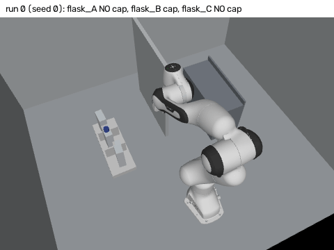
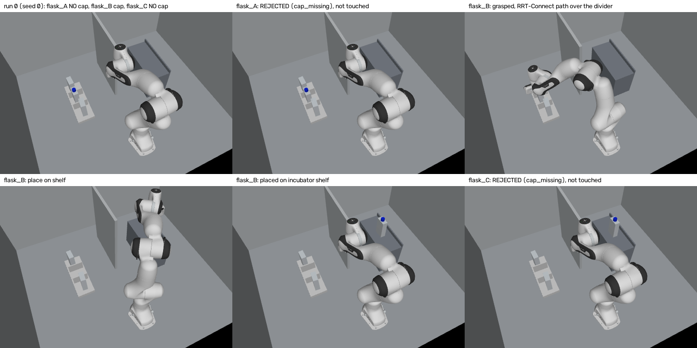
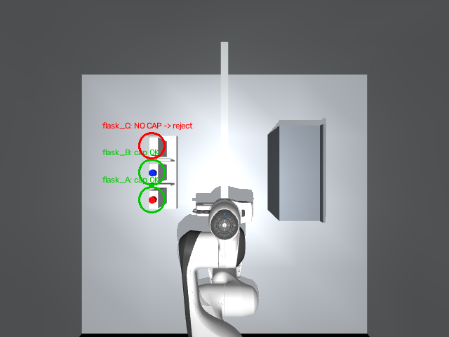
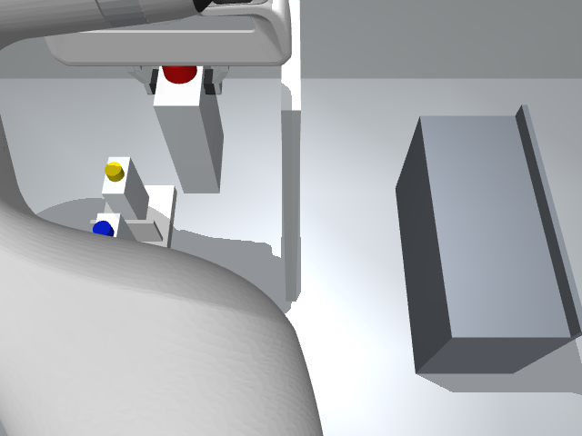

A Franka Panda moves T75-sized flasks from a rack to an incubator shelf inside a box-shaped hood. It follows a YAML lab protocol, plans every move with RRT-Connect and full collision checking, and uses an overhead camera to reject flasks without a cap.
Cell culture happens inside a biosafety hood: walls on three sides, a low glass sash in front, racks and shelves packed close together. A robot arm in that box cannot simply move from A to B. And a flask with a missing cap must never be lifted, because the medium would spill or be contaminated.
A straight line in joint space collides in 80% of the planning queries here, and every time while the arm carries a flask.
The camera has to decide, before the gripper closes, whether each flask has its cap, and the protocol has to say what happens if not.
Collision-free planning and a cap check, run 100 times with randomized poses, caps and light.
A hardware result. There is no real robot, hood or cell; grasp physics is not modelled.
Layout, reach and protocol mistakes show up in minutes, before any hardware is bought or moved.
Labware, slots, the step list and what to do when a step fails. Unknown steps, steps out of order, or a cap check after the grasp are refused before the run starts.
The overhead camera thresholds each cap color inside the slot's region and turns the blob centroid and depth into a 3-D position. No blob, or a cap more than 3 cm from the slot, means the flask is skipped.
Damped least squares IK gives top-down grasp poses; RRT-Connect finds a joint path, every edge checked at 0.01 rad, then shortened. Descend, lift and place are straight fingertip lines.
At release the flask is handed to MuJoCo physics, settles for 0.5 s on the shelf, and is checked for position and tilt before the arm returns home.
The protocol puts the cap check before the grasp and skips on failure.
A straight-line path is checked for the same start and goal, never executed.
Planning and playback both check at 0.01 rad, so a planned path cannot collide when played.
100 runs with seed 0: flask position noise ±1.5 cm, yaw ±5°, a 10% chance per flask that the cap is missing, and light between 0.7 and 1.3 times nominal.
Share of planning queries whose path hits something. 258 queries per segment.
Seconds, bar length to 12 s. 258 flasks.
| Measure | Result | Reading |
|---|---|---|
| Capped flasks moved rack to shelf | 258 / 258 | no failures of any cause |
| Missing caps rejected before grasp | 42 / 42 | 0 grasped, 0 capped flasks falsely rejected |
| Vision cap position error | 2.7 mm | mean; max 3.7 mm |
| Settled flask xy error on the shelf | 0.2 mm | mean; near zero by construction |
| Evaluation wall time | 764 s | 100 runs, one process |

results/run_log.jsonl (B: 8.75 s simulated). The hood ceiling and front glass are hidden in the picture only. Made by render_protocol_gif.py.

render_demo.py.
render_demo.py.At carry height with a top-down grasp, the arm could not reach the far rack and shelf slots. Rack and shelf moved closer to the centre line, from ±0.36 and ±0.38 m to ±0.32 m.
It needed mj_comPos after mj_kinematics. Found and fixed while building the planner.
Joint-space interpolation for short moves curved the carried flask through a rack divider. Descend, lift, place and retreat became straight fingertip lines solved by IK at each waypoint.
When edges were checked more coarsely than playback, collisions appeared at execution. Both now use 0.01 rad spacing.
Grasp and carry are kinematic: a grasped flask is attached rigidly to the hand, and friction or slip is not tested. Cycle time is simulated. Pose noise is half of the 3 cm tolerance, so 100/100 shows consistency, not robustness. Vision does not estimate flask yaw.
Harder evaluation near the tolerance, with the arm hiding the camera and distractor colors; flask yaw from the body blob; a grasp with contact physics; time-optimal timing; a ROS 2 bridge and a MoveIt comparison.
pip install mujoco numpy opencv-python-headless pyyaml pytest pillow export MUJOCO_GL=egl pytest -q # 7 tests python eval.py --runs 100 --seed 0 # results/metrics.json python make_results.py # RESULTS.md python render_protocol_gif.py # docs/assets/ GIF + frame strip